+54 341 480 5000
info@mediomedico.com.ar
Términos
Privacidad
Medio Médico
Desde 1985, el origen de sus resultados
Home
Productos
Reactivos
Descartables
Instrumental liviano
Instrumentos
Institucional
La empresa
Historia
Calidad
Servicio Técnico
Clientes
Reactivos
Autoinmunidad
Anatomía Patológica
Banco de Sangre
Biología Molecular
Cardiología
Citometría de Flujo
Coagulación 
Endocrinología
Hematología
Industria
Inmunología
Marcadores tumorales
Medio interno
Microbiología
Monitoreo de drogas
Monitoreo de pacientes
Orina 
Proteinograma 
Química Clínica
Screening neonatal
Serología
Test rápidos
Veterinaria
No se encuentra ningun filtro activo